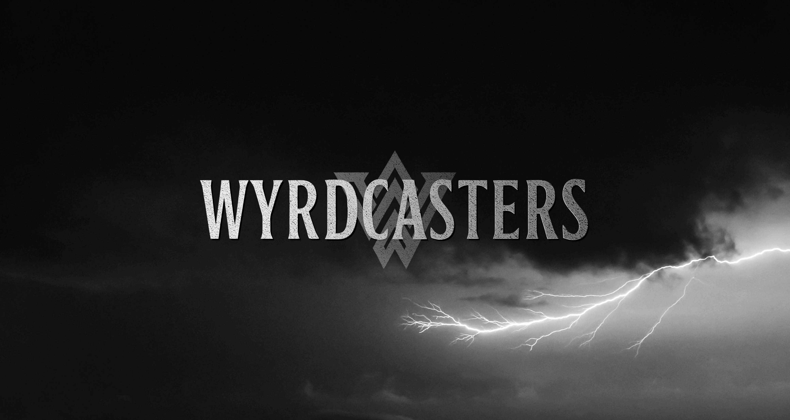
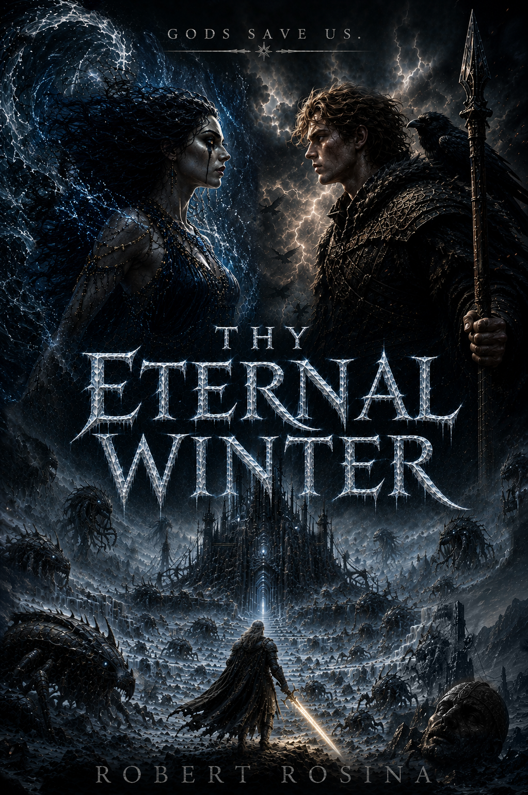
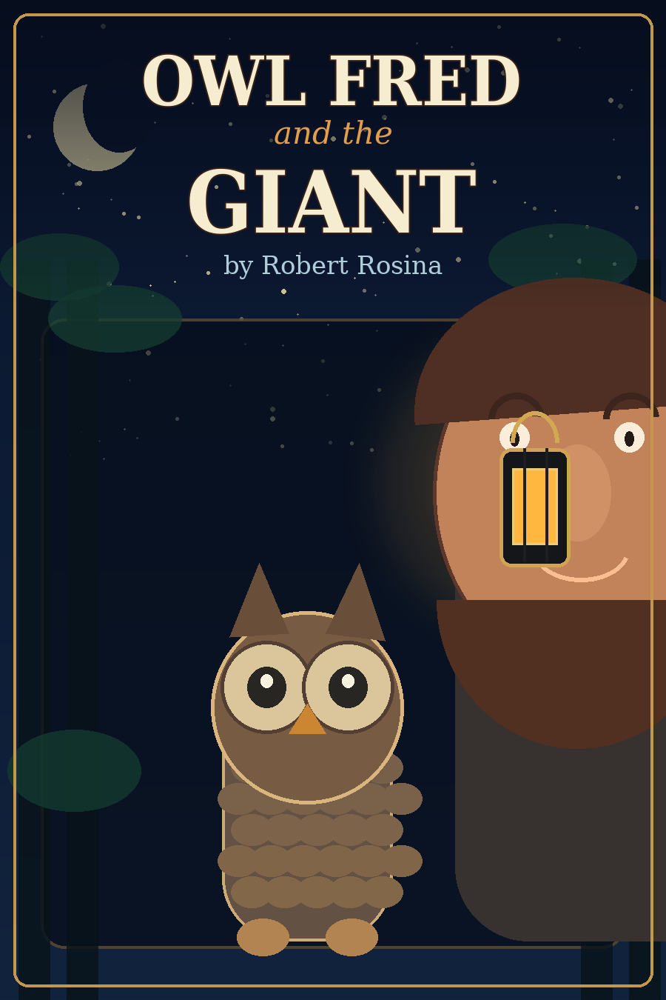

Robert Rosina writes across two imaginative worlds: mythic fantasy concerned with gods, ruin and spiritual transformation, and children’s stories shaped by wonder, courage and the safety of home.

In the tradition of The Lord of the Rings, Dune, and the Cthulhu Mythos, Thy Eternal Winter is a dark mythic fantasy set in the wider Wyrdcasters universe.
Thy Eternal Winter
A novel by Robert Rosina, and part of the wider Wyrdcasters mythic universe.

Enter the frozen mythscape of Thy Eternal Winter — a dark epic of gods, ruin, prophecy, and survival at the edge of annihilation.
The world of Heim stands on the brink of annihilation. A catastrophic rupture has unleashed the Frost across the land, spreading monstrosities, collapsing kingdoms, and turning old certainties into ash. Rival nations advance, traitors plot from within, and ancient powers circle the dying realm. Amid the ruin, a young Odin is thrust into a war for survival. As winter deepens and the Helmouth becomes the axis of catastrophe, he and his allies must gather the Wyrdcasters and stand against a darkness that may consume gods and men alike.
The Saga of the Wyrdcasters is the central mythopoeic work of the Wyrdcasters universe — an epic unfolding across nine volumes, beginning with the opening trilogy. Inspired by Norse mythology and born of visions encountered during a profound break from ordinary reality, the Wyrdcasters universe poses a singular, enduring question — a question the author anticipates may take a lifetime, or longer, to answer:
What if the Norse gods were real — an advanced race from a forgotten age — but ancient humanity, due to their limited undestanding, misinterpreted their histories as myth?
Rather than a strict retelling of the Eddas, the narrative extrapolates from the Norse cosmology, exploring themes of spiritual evolution and corruption, madness, metaphysics, and transformation, as literature's most enduring characters journey through a collapsing spiritual cosmos as it spirals toward Ragnarök.
Children’s Books

Picture book · Released 2026
Owl Fred and the Giant
A small owl ventures into the night and meets someone impossibly large.
When Owl Fred encounters a towering figure in the darkness, fear gives way to recognition, warmth and home. The first Owl Fred picture book is a gentle story about imagination, courage and the security found in a parent’s care.
The Owl Fred series begins here, with further adventures to follow.
ROBERT ROSINA is an author whose work fuses myth, philosophy, and speculative realism into a singular expression of modern mythopoeia. This fusion makes his masterwork, The Wyrdcasters Saga, philosophically ambitious — closer to Herbert’s Dune or Wolfe’s Book of the New Sun than to conventional mythic fantasy. Though rooted in ancient myth, Rosina’s work speaks urgently to the modern condition: a world fractured by technological excess, cultural collapse, and spiritual exhaustion. Through his writing, he invites readers to confront timeless questions of spiritual evolution, corruption, and the search for transcendence amid decay — questions as vital now as they were in the first age of the stories.